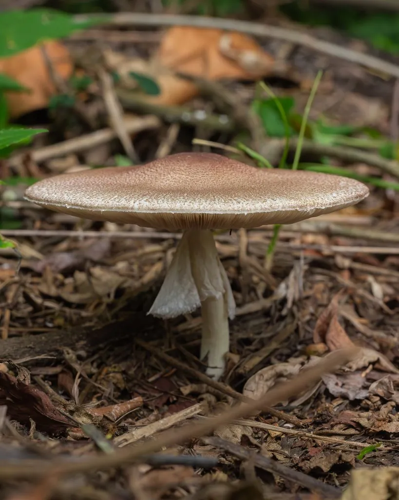

真菌 · 真菌界
姬松茸 Agaricus subrufescens

姬松茸原产巴西，菌盖淡褐色带细鳞片、有杏仁香气，喜高温栽培，因富含多糖而被广泛用作保健食用菌。
- 分类
- 门担子菌门纲伞菌纲目伞菌目科蘑菇科属蘑菇属
- 栖息环境
- 草地与腐殖质丰富的土壤，栽培用稻草、粪肥发酵培养料
- 地理分布
- 原产巴西东南部，现中国福建、浙江等地及日本广泛栽培
- 保护级别
- 暂无评估（IUCN 未评估，栽培食用菌）
物种志
姬松茸是担子菌门蘑菇科的真菌，子实体单生或群生。菌盖初期半球形，后平展，直径 5–15 cm，表面淡褐色、肉桂褐色至浅黄褐色，覆盖细密的纤维状鳞片；菌肉白色，厚实，受伤后略变黄。菌褶离生、密集，幼时粉红色，成熟后变为深褐色至黑褐色。菌柄白色至淡黄色，粗壮，长 5–12 cm，有膜质菌环；孢子印深褐色。它带有杏仁般的香气，与松茸并非同类。
姬松茸原产于巴西东南部，喜欢高温高湿，适宜出菇温度约 25–30 ℃，与多数蘑菇相比更耐热。它多用稻草、畜禽粪肥和甘蔗渣等发酵培养料栽培，中国福建、浙江等地有较大规模生产。姬松茸肉质肥厚、味道鲜美，可鲜食、干制和做汤；其子实体和菌丝体富含 β-葡聚糖等多糖类物质，被广泛开发为保健食品。需要说明的是，“姬松茸”与名贵的松茸只是名字相近，亲缘关系很远。
形态与习性
- 菌盖直径 5–15 cm，淡褐至肉桂褐色
- 菌褶幼时粉红，成熟后深褐色
- 菌柄白色粗壮，有膜质菌环
- 气味带杏仁般的香气
- 出菇温度适宜约 25–30 ℃，较耐热
- 栽培稻草、粪肥与甘蔗渣发酵料
- 食用性可食，常用于保健食品开发
趣味知识
- 姬松茸原产巴西，所以又叫“巴西蘑菇”。
- 它和名贵的松茸只是名字像，亲缘关系其实很远。
- 姬松茸喜欢高温，25–30 ℃ 时出菇最好。
- 它的多糖含量较高，常被做成保健食品。